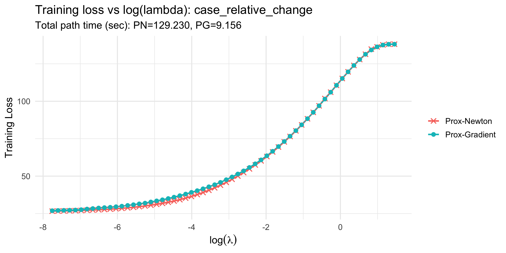
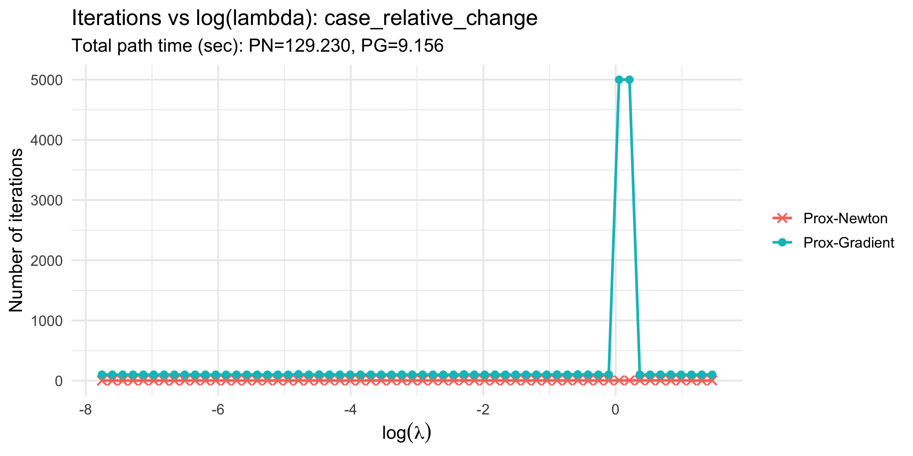
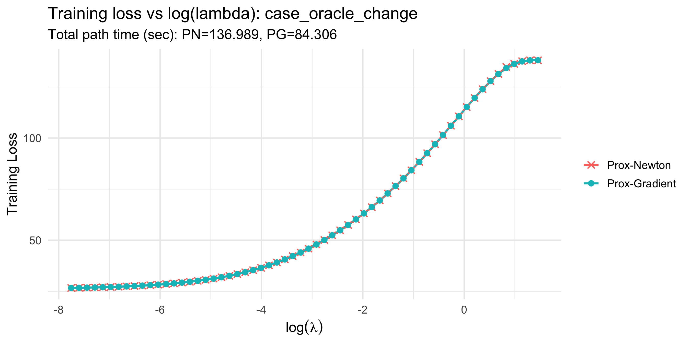
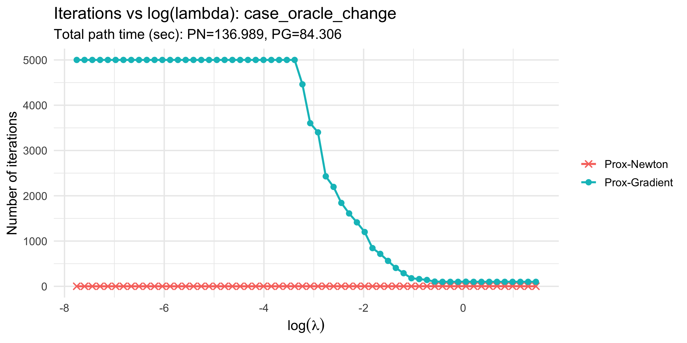
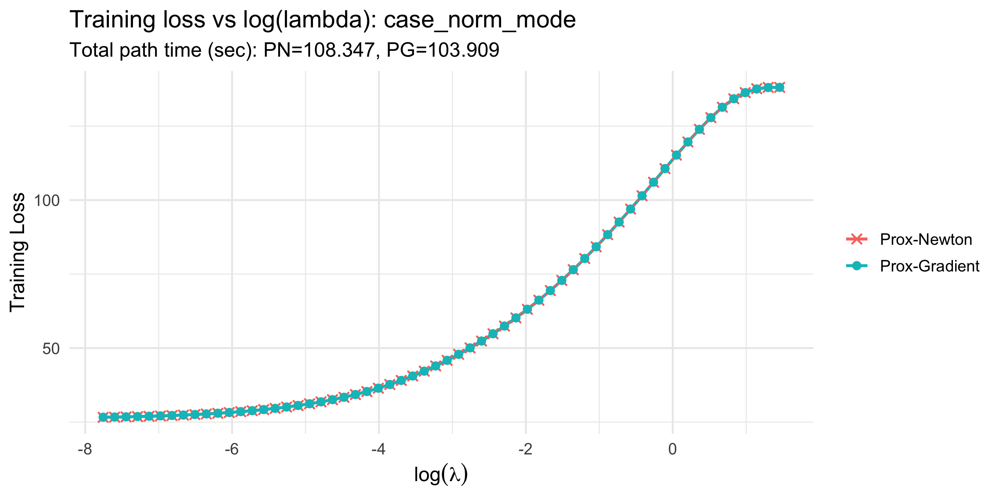
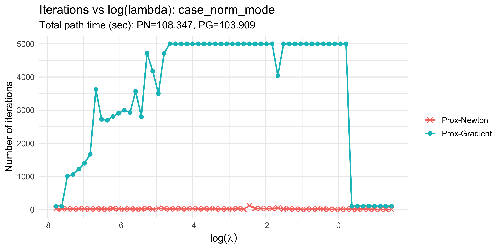

Generated: 2026-03-04 21:49:39 CST
Source: lambda_summary_case_*_tol_1e-04.csv
| Case | PG min | PG max | PN min | PN max | PG configured min_iter |
|---|---|---|---|---|---|
| case_relative_change | 100 | 5000 | 1 | 5 | 100 |
| case_oracle_change | 100 | 5000 | 1 | 5 | 100 |
| case_norm_mode | 100 | 5000 | 1 | 119 | 100 |
Source: solution_path_time_by_stop_mode_tol_1e-04.csv
| Case | Method | Total elapsed (sec) | tol_outer | tol_inner_base | tol_inner_floor |
|---|---|---|---|---|---|
| case_relative_change | Prox-Gradient | 9.155796 | 1e-04 | 1e-05 | 1e-08 |
| case_relative_change | Prox-Newton | 129.230396 | 1e-04 | 1e-05 | 1e-08 |
| case_oracle_change | Prox-Gradient | 84.306427 | 1e-04 | 1e-05 | 1e-08 |
| case_oracle_change | Prox-Newton | 136.989372 | 1e-04 | 1e-05 | 1e-08 |
| case_norm_mode | Prox-Gradient | 103.909037 | 1e-04 | 1e-05 | 1e-08 |
| case_norm_mode | Prox-Newton | 108.346834 | 1e-04 | 1e-05 | 1e-08 |

Training loss vs log(lambda): case_relative_change

Iterations vs log(lambda): case_relative_change

Training loss vs log(lambda): case_oracle_change

Iterations vs log(lambda): case_oracle_change

Training loss vs log(lambda): case_norm_mode

Iterations vs log(lambda): case_norm_mode